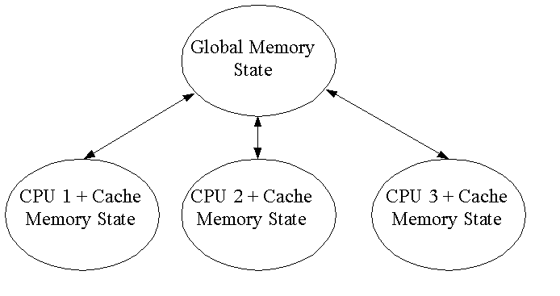

ICU4C Thread Safety Guidelines
Here are a set of suggested coding guidelines for thread safety within
ICU. The memory architecture of some multi-processor systems are
not compatible with the double-checked lazy data initialization that we
have been using. Here are some alternative approaches.
This applies to the internal implementation of ICU. No change to
the threading model presented to code using ICU is implied.
Draft 0.03
4/23/03
Andy Heninger
The Problem with Double-Checked Lazy Initialization:
Processor Memory Models, Weak Ordering of Memory Operations
ICU has historically used double-checked lazy initialization of
constant objects. The code typically looks something like this:
UType *gObject = NULL;
UType *getObject() {
if (gObject == NULL) {
UType *tempObj = new UType;
umtx_lock();
if (gObject == NULL) {
gObject = tempObj;
} else {
delete tempObj;
}
umtx_unlock();
}
return gObject;
}
This code is broken on a multi-processor system with weak memory
ordering. On such a system, writes to memory made by a thread
executing on one CPU may, on a second thread on a second CPU, appear to
occur out-of-order. Thread one may store a value into
variable A, then later write to variable B. Thread two may see the
value of B change before the
value of A.
The problem with the double checked lazy initialization code occurs
when a thread sees a non-null value in the global object pointer at the
first check, but does not yet see a fully initialized object. A
second thread initialized the object, then initialized the pointer, but
to the first thread, the pointer initialization appeared to occur before
the object initialization.
It's interesting that the double-checked initialization pattern has
been widely used for years, but has only recently been identified as a
potential problem. The risk exists only on some processor
families, and is transient in time. If an application survives
its start up and initialization without failure, it becomes safe, and
will remain so no matter how long it runs. Most of the published
discussion centers on Java and the Java Virtual Machine memory
architecture, the design of which increases the likelyhood of trouble.
Processor Memory Models

In this example, we have three threads running on three separate
processors, all running in the same address space. Because of
processor cache memory, each thread has a slightly different view of the
contents of the processes address space. The model described here
may not correspond exactly to any particular type of processor, but it
is close enough to be useful in understanding the problem.
When a thread stores into "memory", there can be an arbitrary delay
before the change propagates to the global shared memory, and the
sequence in which the changes propagate up may be jumbled in time.
Then, before the changes can be seen by another processor, they must
propagate back down into that processors local memory, which again
may involve an arbitrary delay and shuffling of the ordering.
The combination of delays and reorderings makes it completely unsafe
for a thread to poll a global memory location, waiting or testing for a
result from another thread.
Mutexes bring a degree of
sanity to this situation. In addition to its usual function,
locking a mutex will (logically) force all pending changes to propagate
from the global memory state down to the processor acquiring the
lock. This ensures that a thread acquiring the lock for a
shared data structure has an up-to-date view of that structure.
Unlocking a mutex forces the reverse memory operation - all pending
changes in the processors local cache will be (logically) propagated up
to the global shared memory, ensuring that the next thread to acquire
the mutex will have an up-to-date view of the modified data structure(s).
Most modern processors also provide some sort form memory barrier
operations that define boundaries across which memory operations can
not be reordered. Unfortunately there is no portable API for
these operations, other than Mutexes.
Recommendations for ICU
Lazy Initialization
For shared constant data or objects that are lazily created on first
use, we should replace the double-checked init with a mutex-protected
initialization. Strictly speaking, only the pointer test and
assignment needs to be protected, not the object construction, but the
code is simpler with the whole sequence protected, and, since it
is one-time-only initialization, mutex contention is not a big concern.
- Create any data that might be needed by an ICU service in the
open() function for that service. Use a mutex when testing the
pointer, which will ensure that an object that was recently constructed
by another thread on another CPU will be fully visible.
UType *gObject = NULL; // global variable
// Include this code in the open() function for the service
umtx_lock();
if (gObject == NULL) {
gObject = new UType;
}
umtx_unlock();
- Use of the data by functions (other than the open or constructor)
no longer need check for initialization. The data will be there.
UType *getObject() {
return gObject;
}
- Data that is used only in uncommon situations, and is either big
or time-consuming to construct, can still be lazily created on
first use. The trade-off is that a mutex lock/unlock will be
needed each time the data is accessed (and possibly created) .
UType *gObject = NULL;
UType *getObject() {
umtx_lock();
if (gObject == NULL) {
gObject = new UType;
}
umtx_unlock();
return gObject;
}
Mutable Global Data
No change is needed in the handling of mutable global data in
ICU. Such data, the table of loaded converters, for example, must
already be protected by a mutex, both for reading and modification.
Mutable per-Instance Data
Processors with weak memory ordering do not introduce any additional
issues for mutable per-instance data.
Operations that are logically const, but that update some hidden data
behind the scenes, must protect that data with a mutex if they are
to be thread safe.
Data Required by ICU functions that do not use Service Objects
ICU services without service objects include Character Properties,
Normalization, Time Zones, and a few more. No Create or Open
type of operation is required before using these services,
leaving no convenient place to put the mutex-protected data
initialization. Some of these functions, character properties for
example, are extremely performance sensitive, meaning that the overhead
of a mutex-protected data check on each operation would not be
acceptable.
An explicit ICU initialization function will probably be required to
safely load the data for these services. The function will be
required in multi-threaded applications, and will need to be called
before additional threads that use ICU are started.
The lazy data loading code within ICU will remain in place; existing
single threaded applications will not be affected and can continue to
work without explicit ICU initialization.
Note: investigate this problem
further. If there is a safe, portable way to avoid the explicit
init, we should use it.
Retaining the lazy initialization is also problematic. The odds
of a failure showing up in a threaded application that omits the init
are extremely low, meaning that testing is unlikely to reveal the
potential problem. Making the initialization mandatory would
guarantee that it wasn't inadvertantly omitted, but still can't
guarantee that it was called before threads were started.
Volatile C/C++ Keyword
and Compiler Optimizations
Use of volatile is not
required for any of the shared data in ICU, which is a good thing
because not all of our compilers support it.
Volatile is needed in situations where a compiler might choose to keep
a variable in a register (within the body of a loop, for example), thus
preventing changes to the variable's underlying memory location that are
made by another thread or hardware from becoming visible.
There are, however, non-thread related restrictions on when a compiler
can keep values in registers, and these restrictions cover all the
requirements of ICU for keeping potentially shared values in memory.
Compilers can never keep a variable's value in a register across a
function call if that variable is in any way accessible outside of the
current function. This includes all global variables, and anything
else whose address has escaped the local context in any way, including
all data members of the "this" object. The issue is that the
called function may change any such variable, and the local
function must see the change. No threading is involved. All
compilers understand this situation, and handle it
correctly.
Any ICU data that will be shared by threads is, almost by definition,
globally addressable. It will be either a true global variable, or
a data member of an ICU service object whose address has been passed
around. No such data will be kept in registers across function
calls, and mutex lock and unlock are, from the compilers point of view,
just function calls. We are safe without the use of volatile.